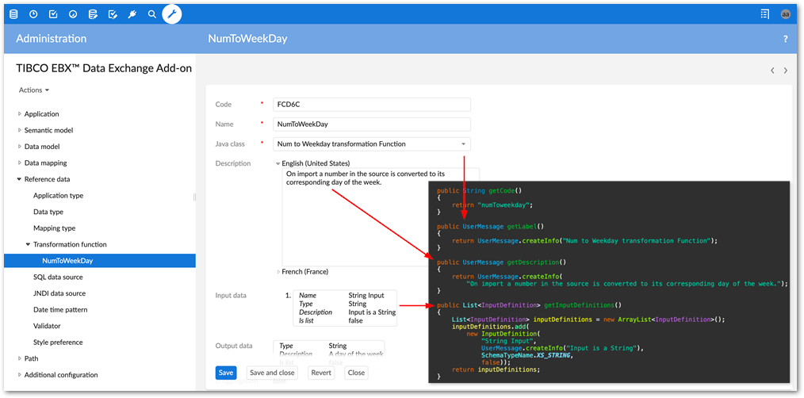

This section shows how to implement a basic transformation function for the EBX® Data Exchange Add-on. This type of implementation requires the following:
A definition class to specify options for add-on transformation configuration requirements.
The class that contains the transformation logic. For example, how to convert data types or transform values.
The following code sample shows a definition class for an add-on transformation function:
public class NumToWeekdayTransformationDefinition implements TransformationDefinition
{
public String getCode()
{
return "numToweekday";
}
public UserMessage getLabel()
{
return UserMessage.createInfo("Num to Weekday transformation Function");
}
public UserMessage getDescription()
{
return UserMessage.createInfo(
"On import a number in the source is converted to its corresponding day of the week.");
}
public List<InputDefinition> getInputDefinitions()
{
List<InputDefinition> inputDefinitions = new ArrayList<InputDefinition>();
inputDefinitions.add(
new InputDefinition(
"String Input",
UserMessage.createInfo("Input is a String"),
SchemaTypeName.XS_STRING,
false));
return inputDefinitions;
}
public OutputDefinition getOutputDefinition()
{
return new OutputDefinition(
UserMessage.createInfo("A day of the week"),
SchemaTypeName.XS_STRING,
false);
}
public List<ParameterDefinition> getParameterDefinitions()
{
return new ArrayList<ParameterDefinition>();
}
//You can use this transformation definition to automatically detect the file type. Based on the type, it can return a different transformation.
public Transformation getTransformation(ServiceType serviceType)
{
switch (serviceType)
{
case SPREADSHEET_IMPORT:
return new ConvertNumToWeekday();
case CSV_IMPORT:
//Add your own transformation for CSV or other formats.
default:
return null;
}
}
public boolean isBidirectional()
{
return false;
}
public boolean isAggregation()
{
return false;
}
}
Note that as shown in the image, the methods shown above return values used by the add-on to define a transformation configuration.
The following code sample shows an implementation of a transformation that takes a numeric value in the source and outputs the value's corresponding day of the week in the target:
public class ConvertNumToWeekday implements Transformation<ImportTransformationExecutionContext>
{
private Locale locale;
public void setup(TransformationConfigurationContext configurationContext)
throws DataExchangeException
{
if (configurationContext == null)
{
throw new DataExchangeException(UserMessage.createError("Context is not initialized."));
}
this.locale = configurationContext.getSession().getLocale();
}
//This method gets the input data to transform and defines the transformation logic.
public Object execute(ImportTransformationExecutionContext executionContext)
throws DataExchangeException
{
if (executionContext == null)
{
throw new DataExchangeException(UserMessage.createError("Context is not initialized."));
}
//Obtain the value to import from the source application.
Object inputValue = executionContext.getInputValue();
if (inputValue == null)
{
return null;
}
//Performs a check on the target location.
SchemaNode schemaNode = null;
if (EBXField.class.isInstance(executionContext.getTargetField()))
{
EBXField ebxField = (EBXField) executionContext.getTargetField();
schemaNode = ebxField.getSchemaNode();
if (schemaNode.isComplex())
{
throw new DataExchangeException(
UserMessage.createError(
schemaNode.getLabel(this.locale)
+ " is a complex type node. The transformation function 'Convert an integer to a string and vice versa' only supports simple type node."));
}
}
//Sets how the data is transformed. In this case it is from one value to another. You could also specify that data types be transformed, values concatenated, etc.
try
{
switch (schemaNode.formatToXsString(inputValue))
{
case "1":
return "Monday";
case "2":
return "Tuesday";
case "3":
return "Wednesday";
case "4":
return "Thursday";
case "5":
return "Friday";
case "6":
return "Saturday";
case "7":
return "Sunday";
}
throw new DataExchangeException(UserMessage.createError("Invalid input data."));
}
catch (ClassCastException ex)
{
throw new DataExchangeException(ex);
}
catch (ConversionException ex)
{
throw new DataExchangeException(ex);
}
catch (Exception ex)
{
throw new DataExchangeException(ex);
}
}
}
See Deploying and Adding to the add-on's catalog for instructions on the next steps.